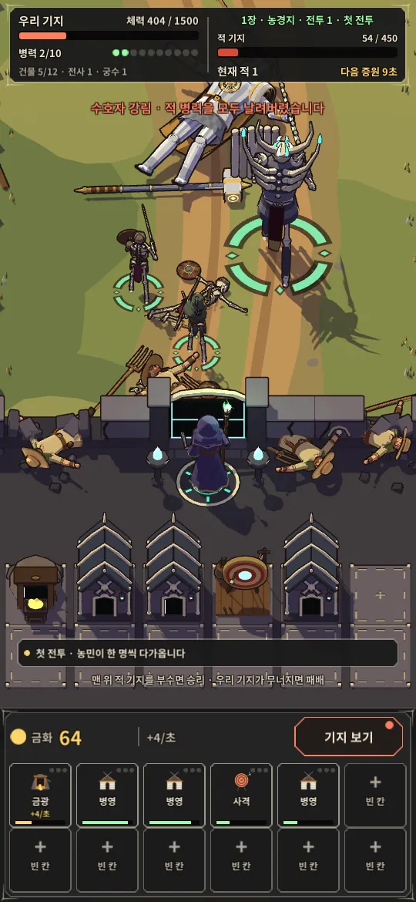

작품 데이터를 불러오지 못했습니다. 페이지를 새로고침해 주세요.
최종 프로젝트 3편

최종 프로젝트 사례
세 편의 목표, 핵심 시스템, 현재 상태와 실제 화면입니다.
전체 24편
직접 만든 게임과 프로토타입을 한 항목씩 정리했습니다. 항목을 누르면 설명·이미지·영상 기록이 열립니다.
Unity·Unreal로 만든 게임 24편. 최종 프로젝트를 고르면 영상과 사례가 바뀝니다.
작품 데이터를 불러오지 못했습니다. 페이지를 새로고침해 주세요.

세 편의 목표, 핵심 시스템, 현재 상태와 실제 화면입니다.
직접 만든 게임과 프로토타입을 한 항목씩 정리했습니다. 항목을 누르면 설명·이미지·영상 기록이 열립니다.